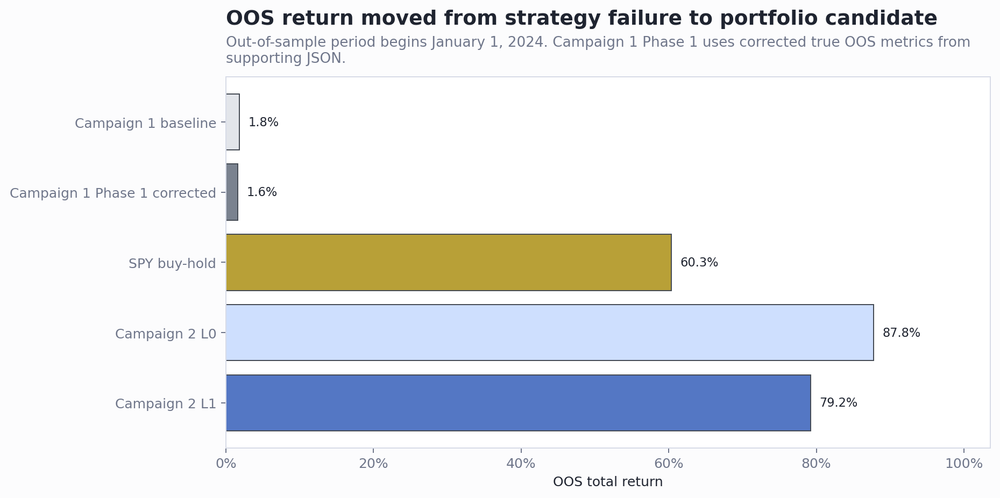
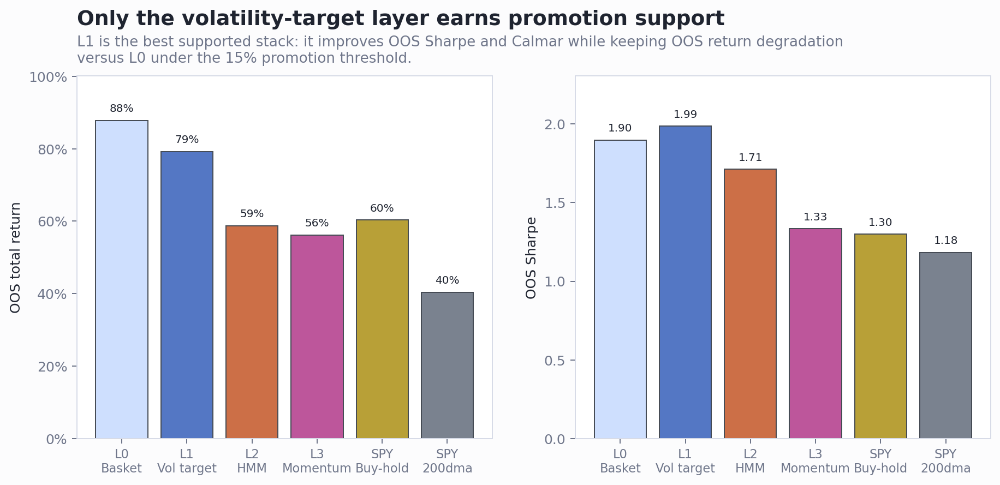
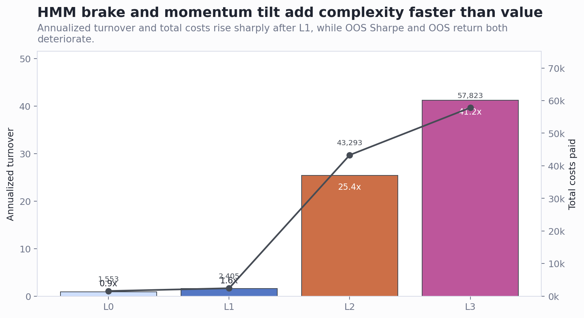

Management Overview: Alpha Campaign Results
Executive Summary
- Campaign 2 is the clear strategic winner. The first campaign's per-name HMM regime strategy produced only 1.8% OOS return and 0.161 Sharpe, while Campaign 2's portfolio framework produced 79.2% OOS return and 1.987 Sharpe for the best supported arm, L1.
- The improvement comes from architecture, not from the HMM brake. Campaign 2's base posture owns the basket by default and uses volatility targeting as a portfolio overlay. The HMM brake, L2, reduced full-period drawdown but failed promotion because OOS return, Sharpe, and Calmar all deteriorated versus L1.
- Management should approve L1 for controlled paper validation, not production deployment. L1 passed the pre-registered support rules and was not cost-fragile at 2x costs, but the evidence still comes from a single OOS window with strong market participation and no live execution history.
Campaign 1 failed because it under-participated in upside
The first campaign should remain a research negative. The baseline strategy generated 1.8% OOS return versus roughly 60.4% for SPY buy-and-hold in the report. Its main positive was stress drawdown containment, but that came with too much opportunity cost in the OOS period.
The reported Phase 1 improvement should not be used as promotion evidence. The markdown table labeled the promoted family as if it improved OOS performance, but the supporting JSON shows true OOS return of 1.6% and OOS Sharpe of 0.144. The apparent stronger return came from full-sample metrics, not true OOS evidence.

| Arm | OOS return | OOS Sharpe | OOS max DD | Management read |
|---|---|---|---|---|
| Campaign 1 baseline | 1.8% | 0.161 | -8.1% | Not investable |
| Campaign 1 Phase 1, corrected OOS | 1.6% | 0.144 | -8.1% | Reject |
| Campaign 2 L0 | 87.8% | 1.898 | -16.0% | Best raw OOS return |
| Campaign 2 L1 | 79.2% | 1.987 | -14.6% | Best supported arm |
| Campaign 2 L2 | 58.7% | 1.712 | -16.1% | Reject HMM brake |
| SPY buy-hold control | 60.3% | 1.298 | -18.7% | Benchmark |
Campaign 2 validates the portfolio-layer direction, with L1 as the only promoted layer
The redesign answers the first campaign's main failure mode. Campaign 2 starts from full ownership of the 30-name basket, then tests whether overlays improve risk-adjusted return. L0 delivered the best raw OOS return at 87.8%, while L1 gave up less than 10% relative OOS return and improved both Sharpe and Calmar.
The best management read is L1, not the highest-return arm. L1 is less aggressive than L0, has much lower full-period drawdown (-21.7% versus -33.8%), beats SPY buy-and-hold on OOS return and Sharpe, and passes the pre-registered control hurdle against SPY 200dma on OOS Sharpe.

| Test | Result | Evidence |
|---|---|---|
| L1 vs L0 | Supported | OOS return degradation 9.8% with higher Sharpe and Calmar |
| L2 vs L1 | Not supported | OOS return falls to 58.7%; turnover rises to 25.4x |
| L3 vs L2 | Not supported | OOS Sharpe falls to 1.334 and max drawdown worsens |
| L1 vs SPY 200dma | Passes control hurdle | OOS Sharpe 1.987 versus 1.183 |
| L1 at 2x costs | not_cost_fragile | OOS return 79.3%; OOS Sharpe 1.987 |
The HMM brake helps in stress but does not pay for its complexity
L2's problem is not that it never reduces risk; it is that the cost of that protection is too high. The HMM brake improves some stress-window drawdowns, but it cuts OOS return from 79.2% to 58.7%, lowers OOS Sharpe from 1.987 to 1.712, and increases annualized turnover from 1.55x to 25.43x.
L3 compounds the issue. Momentum tilt increases turnover to 41.24x and lowers OOS Sharpe to 1.334. These layers should stay out of defaults until they clear an independent OOS or paper-trading gate.

Recommended Next Steps
- Approve L1 for a limited paper-trading pilot. Run L1 side-by-side against L0, SPY buy-hold, SPY 200dma, and the current live/paper agent behavior using identical data, fill, cost, and rebalance assumptions.
- Do not change production defaults yet. No live capital or default agent behavior should change until L1 survives a live paper window and a fresh walk-forward rerun.
- Retire Campaign 1's per-name HMM strategy as a capital candidate. Keep it only as a research input or diagnostic stress filter; it failed the economic OOS test.
- Do not promote the HMM brake or momentum tilt. L2 and L3 should remain research arms because they fail the pre-registered layer support rules and add substantial turnover.
- Fix and lock the Campaign 1 reporting correction. The Phase 1 table should distinguish full-sample metrics from true OOS metrics before the report is reused in any approval package.
Further Questions Before Any Production Decision
- Does L1 still beat L0 and SPY controls after a fresh walk-forward rerun with a later OOS boundary or rolling OOS windows?
- How does L1 behave under current paper execution, including actual broker fills, residual cash, tax/friction assumptions, and rebalance timing?
- What is the minimum monitoring framework for L1: volatility breach, drawdown trigger, correlation spike, exposure cap, and monthly review cadence?
- Can a simpler non-HMM drawdown control replicate the stress benefit of L2 without the turnover penalty?
Caveats and Assumptions
Campaigns are not perfectly like-for-like. Campaign 1 tested per-name HMM trading; Campaign 2 tested a portfolio-level layer stack. The comparison is decision-useful because both target the same 30-name basket and OOS boundary, but the performance jump should be attributed to the portfolio architecture rather than HMM forecast quality.
The OOS window is still limited. Campaign 2's strongest OOS evidence starts January 1, 2024, a market period favorable to equity participation. Treat L1 as paper-ready, not production-ready.
Sources reviewed. Primary inputs were ALPHA_CAMPAIGN_REPORT.md, ALPHA_CAMPAIGN_2_REPORT.md, data/campaign/phase0/summary.json, Campaign 1 Phase 1 supporting JSON, and data/campaign/portfolio_campaign2/summary.json.